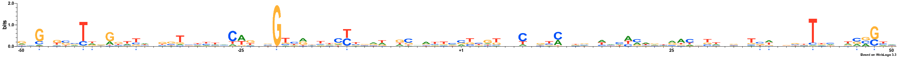
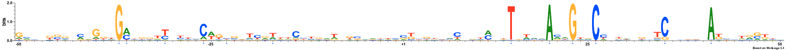
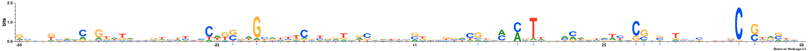
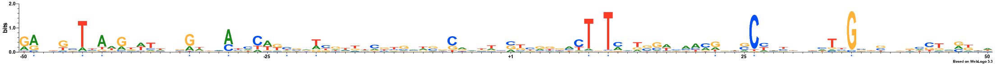
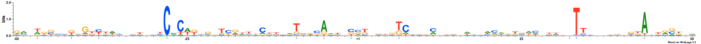
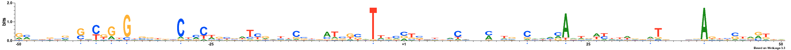
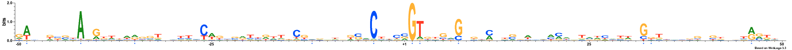
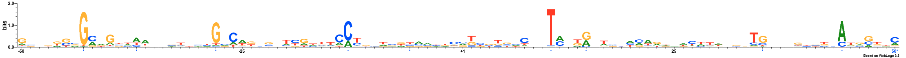
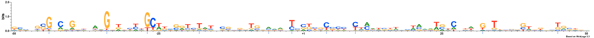

MODEL
Lambda: 5.0
Dataset structure: 800 sequences with 100 features
Number of architectures in the best model: 11
Likelihood of best model: -95651.2321242
Architecture 1: 87 sequences with 11 important features
Sequence logo for the important positions in architecture 1

Architecture 2: 53 sequences with 12 important features
Sequence logo for the important positions in architecture 2

Architecture 3: 207 sequences with 12 important features
Sequence logo for the important positions in architecture 3

Architecture 4: 51 sequences with 10 important features
Sequence logo for the important positions in architecture 4

Architecture 5: 39 sequences with 12 important features
Sequence logo for the important positions in architecture 5

Architecture 6: 121 sequences with 11 important features
Sequence logo for the important positions in architecture 6

Architecture 7: 47 sequences with 10 important features
Sequence logo for the important positions in architecture 7

Architecture 8: 93 sequences with 11 important features
Sequence logo for the important positions in architecture 8

Architecture 9: 76 sequences with 10 important features
Sequence logo for the important positions in architecture 9

Architecture 10: 0 sequences with 0 important features
No Sequences
Architecture 11: 26 sequences with 10 important features
Sequence logo for the important positions in architecture 11

NOTE: All important positions in the logos are followed by an asterisk symbol and are coloured blue